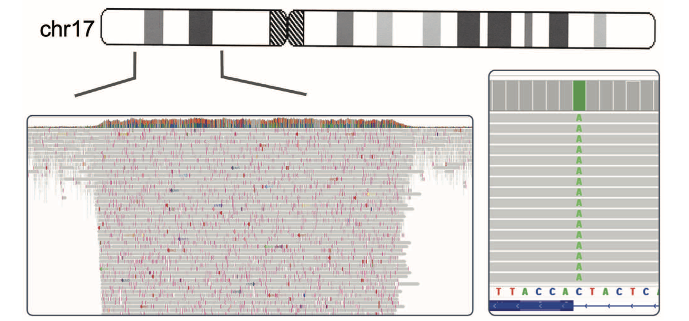
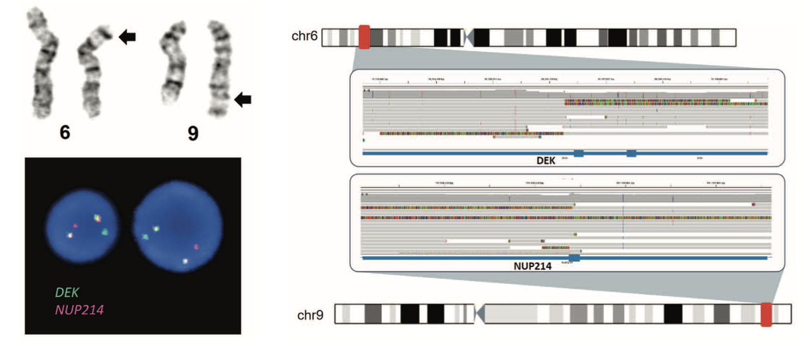

Overview
At Vancouver General Hospital's Cytogenomics Laboratory, I led the implementation and optimization of Oxford Nanopore Technologies (ONT) long-read sequencing for comprehensive genomic profiling of acute myeloid leukemia (AML). This work explored the potential of ONT as a rapid, all-in-one diagnostic platform capable of detecting the full spectrum of clinically relevant variants—from large structural rearrangements to single nucleotide changes—while preserving epigenomic information in native DNA molecules.
Technical innovation: Adaptive sampling
A key focus of this work was optimizing adaptive sampling, a unique ONT capability that enables targeted enrichment without pre-amplification or hybridization-based capture. By sequencing DNA molecules in real-time and selectively retaining reads from user-defined regions of interest while rejecting off-target molecules, adaptive sampling achieved ~70x coverage in a 32-gene myeloid panel while maintaining ~12x genome-wide coverage for structural variant detection—all from a single library preparation.
Through systematic optimization across 8 AML patient samples on PromethION flow cells, I established critical parameters for maximizing adaptive sampling performance:
- Buffer size optimization: Targeting ≥1% of the genome in cumulative regions of interest minimized pore rejection rates and sustained sequencing throughput.
- DNA input concentration: Maximizing input DNA (>5-10 μg) proved essential for saturating nanopores and maintaining high pore occupancy throughout sequencing runs.
- Read length considerations: Balancing read length with input DNA quantity to optimize throughput while preserving the structural variant detection advantages of long reads.

Analytical workflow and variant detection
I developed a comprehensive bioinformatic pipeline integrating Dorado base calling (HAC model), genome alignment to hg38, and dual variant calling strategies using Sniffles for structural variants and Clair3 for single nucleotide variants. This workflow successfully detected:
- Complex structural rearrangements including translocations (e.g., t(6;9) DEK::NUP214), large duplications (PDGFRB::JAKMIP2 from ~2 Mb tandem duplication), and partial tandem duplications (12 kb KMT2A-PTD at 5.9% VAF).
- Clinically actionable point mutations in targeted regions with high coverage.
- Structural variants in off-target regions through retained genome-wide coverage—demonstrating the platform's capacity to serve multiple diagnostic functions simultaneously.

Integration with complementary technologies
This work was conducted alongside the clinical implementation of Optical Genome Mapping (OGM), enabling direct comparison and integration of these complementary long-range genomic technologies. ONT's ability to detect nucleotide-level changes while preserving structural variant information positioned it as a potential single-platform solution, bridging the gap between cytogenetic analysis and next-generation sequencing in AML diagnostics.
Clinical implications and challenges
The study demonstrated ONT's potential to transform AML genomic profiling by consolidating multiple testing modalities into a rapid, comprehensive platform. However, challenges identified included:
- Lower base calling accuracy (~99.1%) compared to short-read sequencing, particularly impacting detection of low-frequency somatic variants (<10% VAF).
- Computational and storage requirements for processing multi-terabyte datasets.
- Need for high-quality, high-molecular-weight DNA input (>1 μg), limiting applicability for some sample types.
- Uneven coverage inherent to adaptive sampling requiring further refinement for optimal structural variant calling across all genomic regions.
Publications and impact
- Published as "Nanopore long-read sequencing and applications in acute myeloid leukemia" in the Canadian Journal of Pathology, providing a comprehensive review of ONT technology for the clinical laboratory community.
- Established foundational knowledge and infrastructure for ongoing long-read sequencing initiatives at VGH, including integration with OGM and expansion to additional hematologic malignancies.
- Generated a comprehensive dataset (>7 TB raw data) and analytical framework available for continued optimization and method development.
Significance and future directions
This work represents one of the early implementations of ONT long-read sequencing in clinical cancer genomics, demonstrating both its transformative potential and the practical challenges of clinical deployment. The adaptive sampling optimization strategies and bioinformatic pipelines developed provide a foundation for expanding ONT applications across cancer diagnostics. Ongoing evolution of base calling algorithms and decreasing computational costs continue to improve the feasibility of ONT as a comprehensive clinical sequencing platform.